Java Beginners Guide
Welcome to the Utopic Unicorn Java Beginners Guide. This guide is intended for those who are taking an into to computer programming class or who are interested in Java programming. This guide is written so that no Java or programming experience is required and will guide users through the Java JDK installation and writing a first Java program. After finished with this guide users will have:
- 1) Installed the Java Development Kit
- 2) Written a simple Java program
- 3) Compiled and run that same program
Be advised that starting materials are required to complete the whole guide and that warnings in red boxes are concerned with potential problems.
- 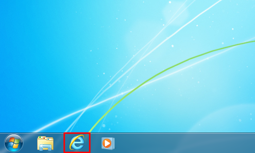 Open web browser "Internet Explorer"
- 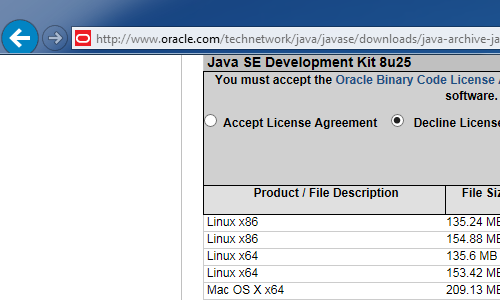 Go to the url http://www.oracle.com/technetwork/java/javase/downloads/java-archive-javase8-2177648.html#jdk-8u25-oth-JPR
- 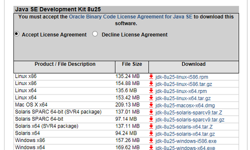 Click "accept license agreement" under Java SE Development Kit 8u25 section
- 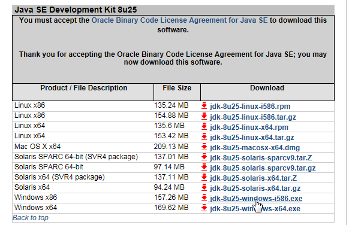 Click on jdk-8u25-windows-i586.exe for Windows x86
-
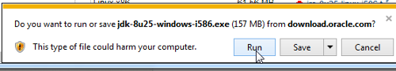
A download box will appear saying if you want to run or save. Click run.
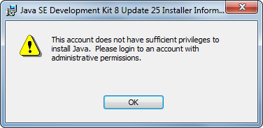 If you see this image, you do not have the required administrator privileges
- 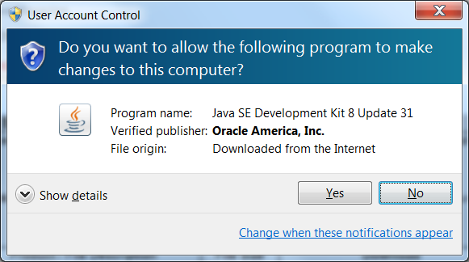 The uac warning will appear. Click "yes" to allow the program.
- 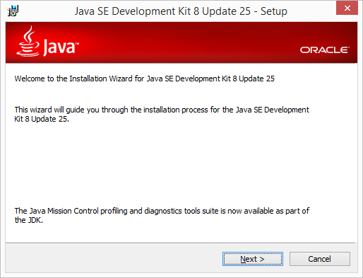 A setup window will appear. click the "next" button twice in the setup window. Click "next" for the destination as well
- 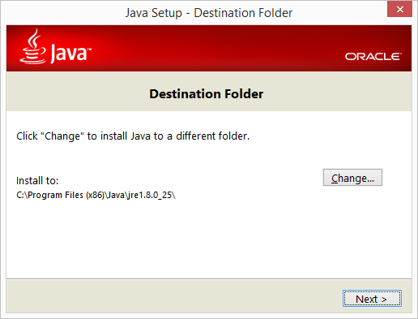 Once the installer is finished, close the installer
- 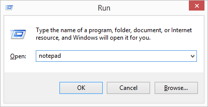 Open Notepad by hitting the "windows key" on your keyboard with "r" type "notepad" click "ok".
-
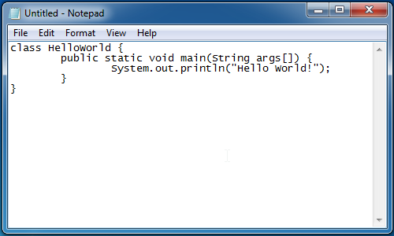
Copy the following code into notepad:
class HelloWorld { public static void main(String args[]) { System.out.println("Hello World!"); } } -
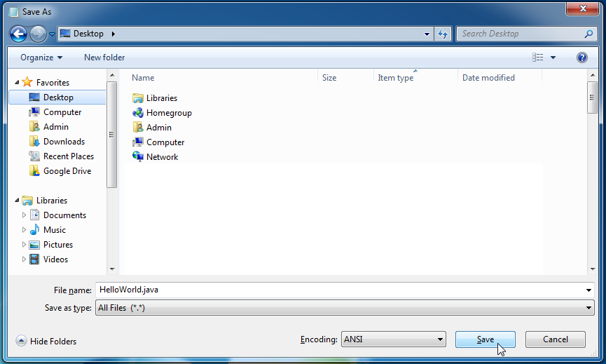
Save the file to the desktop as HelloWorld.java.
When saving make sure the option for "save as type" is set to "all files"
-
 Open command prompt by holding shift and right click on the Desktop. Click open command window here.
Open command prompt by holding shift and right click on the Desktop. Click open command window here.
-
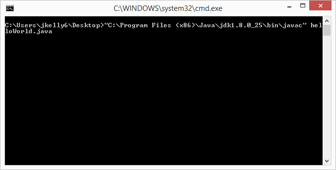
Run the command
"C:\Program Files (x86)\Java\jdk1.8.0_25\bin\javac" HelloWorld.javato compile the code -
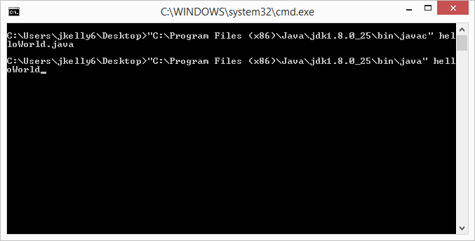
Run the command
"C:\Program Files (x86)\Java\jdk1.8.0_25\bin\java" HelloWorldto run the code -
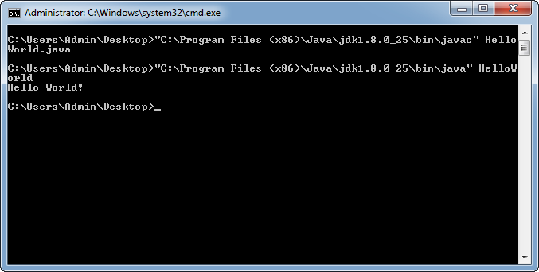
The end result should be a single line in the terminal that says
Hello World!Say hello back!